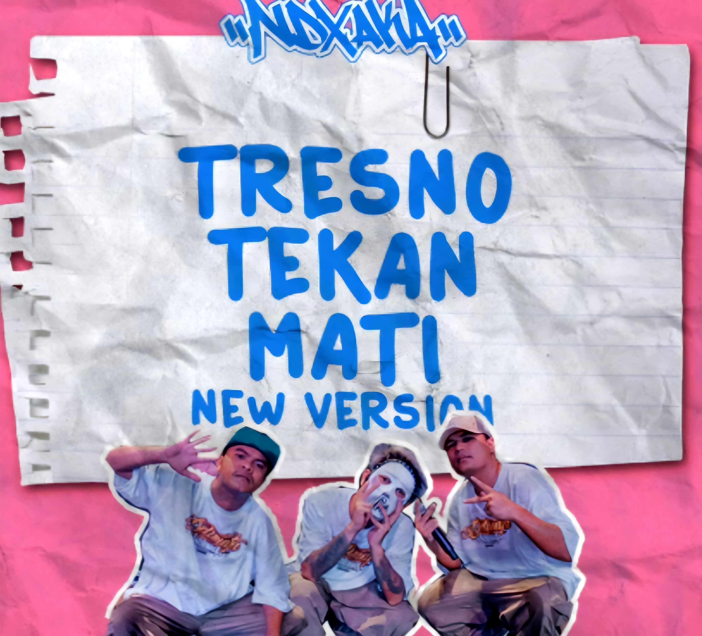

Tresno Tekan Mati (New Version) - NDX AKA
Deskripsi
Tresno Tekan Mati menggambarkan cinta yang setia sampai akhir hayat. Dalam lagu ini, seorang lelaki menunjukkan rasa cintanya yang begitu besar kepada pujaan hatinya. Bahkan, meskipun terluka, ia tetap percaya bahwa cinta tulus yang ia berikan akan membawa mereka tetap bersama. Lagu ini nggak cuma bikin baper, tapi juga jadi pengingat bahwa cinta sejati butuh kesetiaan dan pengorbanan. Dibawakan oleh Yonanda Frisna Damara dan Fajar Ari, lagu ciptaan Andi Mbendol ini terasa istimewa dengan balutan musik dangdut modern yang enak di telinga.
Audio Sample
Ulasan
Kami suka lagunya, sangat easy listening tapi tetap bermakna.
Rating: ⭐⭐⭐⭐☆